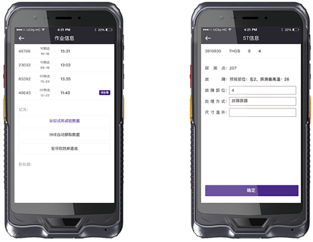

列检手持机系统有列车技术作业信息管理、货车运用安全质量监控管理、列检手持机操控和数据共享等功能。
列检手持机系统基本用途：根据技检作业计划，将劳动组织信息、AEI过车信息、5T系统报警信息以及定检到过期车信息、车辆定检信息、运行质量跟踪系统的相关信息及时发送给现场检车员，指导现场对预报故障进行重点检查确认和修理质量信息反馈，实现作业信息自动接收和传送，提高作业效率。
列检手持机系统采集的信息包括：劳动组织信息；AEI过车信息；THDS、TPDS、TADS、TFDS报警信息；定检到过期车信息；车辆定检信息；运行质量跟踪系统的相关信息；电动脱轨器的插设状态信息；地面试风装置工作状态信息；列车车辆制动机试验监控装置风压监测信息等。采集信息涵盖使用单位全部进路的作业列车。信息采集后按列、辆为单位进行与作业列车进行匹配，具备报警提示、查询和标识功能。
列检运用信息工作平台具备自主补充、更正列车技术作业信息功能（含对采集信息的补充、更正）。
列检手持机系统发布信息、现场未处置信息、现场确认处置信息，按不同类别做明显区别标识。
根据HMIS车统－14基本信息，以及对技检作业列车进行当班人员分组派班的结果信息，把分组人员与对应采集到的作业预报信息进行绑定，管理人员与对应作业列车的预报信息进行绑定。分组派班维护智能化、模块化，具备列车运行方向、作业位置、作业范围调整功能，操作方便，有方向、位置、作业范围示意图。
据分组派班安排，通过值班室集控设施和无线传输设施，将系统采集、匹配后的信息下发到相应的检车员。操作和控制流程与使用单位技术作业实际相符。具备信息发布状态监控、提示功能。
现场检车员根据手持机接收的作业信息对预报的车辆故障进行检查确认，并将修理质量信息进行反馈。列检运用信息工作平台和手持机均具备自主录入、更正列车技术作业信息功能。具备信息反馈状态监控、提示功能。
列车技术质量评价信息化，满足列车技术质量的自我评价和监控评价，同时具备场际互控、对规对标、列车质量抽查结果的统计、分析、查询和报表生成等功能。
工作质量评价信息化，具备按运用车间、班组、检车员分级进行安全、质量、违章违纪、防止事故等信息的汇总、统计、分析等功能。
安全分析信息化。满足实时采集HMIS相关信息和录入检查考核问题，实现日常考核、防止事故、违章违纪等安全检查结果的统计、分析、查询和表报生产功能。
日常事务管理。满足车间将列车技术质量抽查、防止事故等要素纳入工资分配功能。
列检运用信息工作平台满足《铁路货车运用维修规程》第180—186条规定的作业量（含发现、处理铁路货车故障件数）分类统计、分析要求。列检运用信息工作平台满足《铁路货车运用维修规程》关于“技术管理手册、单据及表报台账”规定的需“信息系统生成”的全部项目。
对系统各组成部分的工作状态进行自检监控，以图形化方式展现并对异常情况及时报警,主要包括值班室集控设施、无线传输设施、手持机、外部数据接口等的工作状态监控。